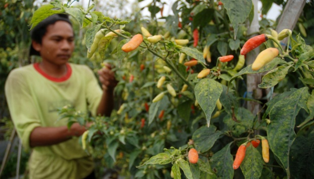
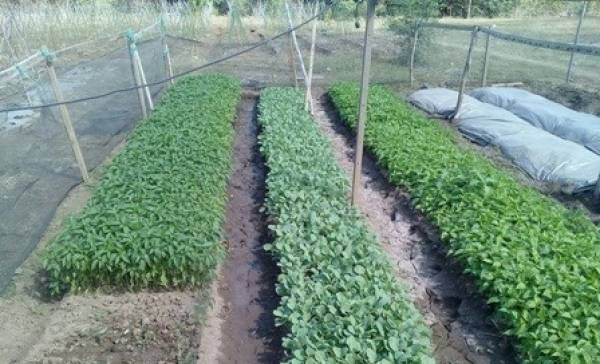
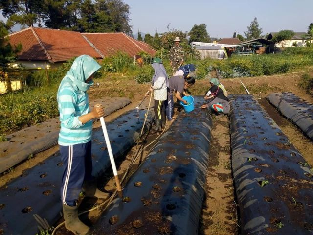
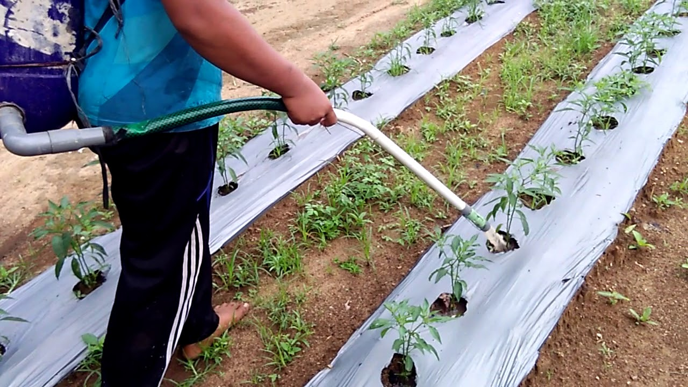
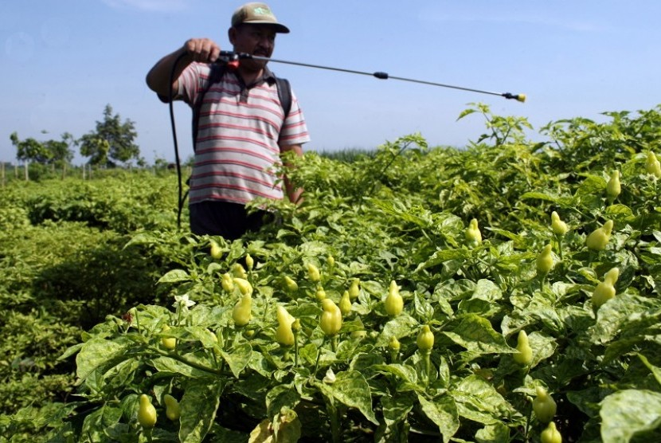
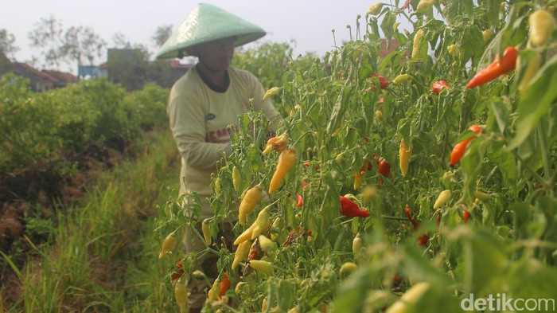

BUDIDAYA CABE

Cabai rawit atau cabai kecil (Capsicum frutescens) termasuk dalamfamili Solanaceae dan merupakan tanaman berumur panjang (menahun), dapat hidup sampai 2-3 tahun apabila dipelihara dengan baik dan kebutuhan haranya tercukupi. Terdapat beberapa macam cabai rawit antara lain rawit kecil, sedang dan besar. Umumnya cabai rawit kecil rasanya sangat pedas. Cabai rawit digunakan untuk sayur, bumbu masak,asinan dan obat. Budidaya cabai rawit secara umum tidak berbedanya tadengan budidaya cabai merah.Namun yang harus diperhatikan adalah jarak tanam dan pemupukannya. Karena umurnya yang panjang, pemupukannya lebih banyak. Umumnya tanaman cabai rawit lebih tahan terhadap penyakit dibanding cabai yang lainnya. Berikut langkah-langkah dalam berbudidaya cabai yaitu :
1. Persemaian
Kebutuhan benih tiap hektar berkisar 100-125g. Bedengan pesemaian dibuat arah utara selatan menghadap ke timur. Media semai dibuat dari campuran tanah dan kompos steril dengan perbandingan 1:1.Benih ditaburkan secara merata di atas media semai kemudian ditutup dengan tanah tipis, disiram dan ditutup dengan daun pisang. Daun pisang dibuka secara bertahap. Setelah umur semaian kurang lebih 7 hari, semaian dipindahkan ke bumbunan yang terbuat dari daun pisang yang diisi campuran tanah dan kompos steril dengan perbandingan 1:1,dan dipilih bibit yang sehat dan pertumbuhannya bagus. Bibit berumur kurang lebih 30-35 hari setelah semai atau telah mempunyai 5-6 helai daun siap untuk dipindahkan ke lapangan.
2. Penyiapan lahan dan penanaman
Apabila lahan yang hendak dipakai merupakan lahan kering atau tegal, maka tanah harus
dibajak dan dicangkul sedalam 30-40 cm dan dibalik, kemudian bongkahan tanah dihaluskan dan sisa
pertanaman sebelumnya dibersihkan agar tidak menjadi sumber penyakit.
Pembuatan bedengan dengan lebar1-1,2 m,tinggi 40-50 cm (disesuaikan dengan kondisi tanah saat hujan,
agar kelengasan tanah terjaga namun tidak tergenang bila turun hujan) dan panjang disesuaikan dengan
kondisi lahan. Jarak antar bedeng kurang lebih 40-50 cm (disesuaikan dengan kemudahan pemeliharaan dan
agar drainasenya berlangsung dengan baik). Pemberian kapur pertanian (jika kondisi tanah terlalu masam)
dilakukan pada saat pengolahan tanah,2-3 minggu sebelum tanam, dengan cara ditaburkan tipis dipermukaan
tanah kemudian dicampur rata dengan tanah. Permukaan bedengan dibuat agak setengah lingkaran untuk
mempermudah pemasangan mulsa. Pemberian pupuk kandang diberikan pada saat pengolahan tanah. Kemudian
mulsa plastik hitam perak dipasang.
Jarak tanam yang digunakan dalam penanaman cabai rawit adalah70 cm x 70 cm atau 60cm x 70 cm. Pada jarak
tanam yang telah ditentukan dibuat lubang tanam pada mulsa plastik dengan menggunakan kaleng yang
dipanaskan. Lubang tanam dibuat dengan kedalaman 15-20 cm dan diameter 20-25 cm, dan dibiarkan satu
malam baru keesokan harinya bibit ditanam.
3. Pemeliharaan

Pemeliharaan terdiri dari penyulaman, pemasangan ajir, penyiraman,pengaturan drainase, penyiangan,
penggemburan, dan pemupukan. Penyulaman terhadap bibit yang mati dilakukan maksimal 2minggu setelah
tanam. Pemasangan ajir berupa bilah bambu setinggi kurang lebih1 m didekat tanaman.
Penyiraman harus diperhatikan agar tanaman tidak kekeringan terutama pada musim kemarau. Pemberian mulsa
plastik hitam perak selain berfungsi untuk mengurangi populasi hama juga membantu menjaga kelembapan
tanah. Pada musim penghujan pengaturan drainase harus diperhatikan agar lahan tidak tergenang air,
karena hal tersebut dapat meningkatkan serangan penyakit akibat kelembaban yang tinggi.
Penyiangan terhadap gulma dilakukan pada umur tanaman 1 bulan.Hal ini perlu dilakukan untuk mengurangi
kompetisi tanaman dengan gulma dalam mendapatkan unsur hara.
Pemupukan disesuaikan dengan kondisi lahan setempat.Kebutuhan pupuk meliputi 10-30 ton/ha pupuk kandang,
Urea 200-300kg/ha, SP-36 200-300kg/ha dan KCl 150-250kg/ha. Pemberian pupuk kandang dan kapur pertanian
dilakukan saat pembuatan bedengan. Pupuk buatan sebagai pupuk dasar diberikan dengan cara membuat
larikan berjarak 25-30 cm dari tepi bedengan dan jarak antar larikan 70cm, kemudian taburkan pupuk
secara merata pada larikan tersebut. Pemberian pupuk dasar ini dilakukan sebelum pemasangan mulsa
sebanyak setengah dosis.
Pemupukan susulan diberikan pada saat tanaman berumur satu bulan, menggunakan sisa pupuk dasar.
Pemupukan susulan ini bisa dberikan dengan cara dicor, setiap tanaman disiram dengan 150-250 ml larutan
pupuk. Larutan pupuk dibuat dengan mengencerkan 1,5-3 kg pupuk buatan per 100 l air. Karena tanaman
cabai rawit merupakan tanaman tahunan yang masih dapat berproduksi sampai 2-3 tahun maka sebaiknya
dilakukan pemupukan ulang sesuai kebutuhan agar produksinya terus bertahan.
4. Pengendalian organisme pengganggu tumbuhan (OPT)
Hama lalat buah dapat dikendalikan dengan pemasangan perangkap lalat buah yang mengandung
metil eugenol. Hama-hama pengisap seperti kutu daun, trips dan kutu kebul dapat dikendalikan dengan
pemasangan mulsa plastik hitam perak dan juga pemasangan perangkap lekat kuning. Penyakit antraknose
dapat dikendalikan dengan penggunaan varietas tahan dan juga penggunaan fungisida secara selektif.
Apabila dalam mengendalikan OPT menggunakan pestisida, maka harus benar dalam pemilihan jenis, dosis,
volume semprot, cara aplikasi, interval dan waktu aplikasinya.
5. Panen dan pasca panen
Pada saat panen, buah yang rusak sebaiknya dimusnahkan,kemudian buah yang dipanen dimasukkan dalam karung jala dan kalauakan disimpan sebaiknya disimpan di tempat yang kering, sejuk dengan sirkulasi udara yang baik.